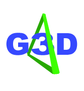

G3D Change Log
<< Documentation Index
Major version numbers introduce API changes that are not backwards
compatible. Minor versions are backwards compatible to the
previous major release.
Changes in 6.00
- Moved changelog to a separate page
- Reformatted overview to be smaller
- Added model debugging info to the IFSBuilder display
- Welded some broken vertices in the teapot.ifs file
- Renamed Font.* to CFont.*
- CFont::draw2DString renamed to CFont::draw2D (use a #define to port old code)
- MeshAlg
- RenderDevice now enables GL_COLOR_MATERIAL by default
- RenderDevice::drawFullScreenImage
- msgBox
- MD2 model gallery in documentation (Kevin)
- MD2Documentor (Kevin)
- debugAssertGLOk macro
- VertexProgram now supports NVIDIA Vertex Program 2.0
- RenderDevice now loads glGenProgramsNV, glDeleteProgramsNV, glBindProgramNV, glLoadProgramNV, glTrackMatrixNV, glProgramParameter4fvNV extensions
- VertexProgram and PixelProgram static factory methods now return reference counted values.
- Split the reference value from RenderDevice::setStencilTest into setStencilConstant
- RenderDevice::STENCIL_INVERT, RenderDevice::STENCIL_REPLACE, RenderDevice::STENCIL_ZERO
- Added brighten argument to Texture::fromFile
- Increased CImage JPEG save quality
- RenderDevice::screenshot now returns the name of the file that was written
- nextPowerOf2 renamed to ceilPow2
- System::alignedMalloc, System::alignedFree
- Carbon, Crackman, Edenmill, Futurist, Interplanetary,
Iomanoid, Starlight, Lesser, and Wild fonts by Ray Larabie.
Like all of our fonts, they are free, but please consider a
donation to him if you like them. http://www.larabiefonts.com/
- MD2Model_Demo
- G3D::MD2Model
- FIX: Fixed a bug in Array shrinking that could cause memory corruption
- FIX: RenderDevice windows with an aspect ratio of less than 1 now allowed.
- FIX: TextInput now parses '#', '~', '~=', '&', '&&', '|', '||' correctly
- VARArea::reset() now waits for rendering calls using its vertex
arrays to complete before wiping the memory.
- G3D::filenameBaseExt, G3D::filenameExt
- VARArea::finish()
- Milestone
- RenderDevice now loads glFlushVertexArrayRangeNV
- Vector2int16
- RenderDevice::freeVARSize()
- Array now allocates 16-byte aligned pointers.
- Decreased the default camera movement rate by 50% for better resolution.
- RenderDevice enables GL_NORMALIZE by default
- Improved the performance of Array::append/Array::push/Array::next
- Array::next
- Array::reverse
- PCX file loading
- Test images
- Color3uint8 as uint8[] addressing
- Color4uint8 as uint8[] addressing
- Removed const from VAR::pointer
- ReferenceCountedPointer::isNull
- alwaysAssertM
- Log::common, Log::getCommonLogFilename
- Switched from static to dynamic linking of zlib
- Upgraded to zlib 1.1.3
- On Win32 the lib list is automatically updated through pragmas
(5.xx programs should revert to linking against default libraries)
- Increased default sky quality to 1.00
- G3D::CFontRef
- RenderDevice now loads all register combiner extensions (NVIDIA only)
- G3D::reflectionMatrix
- Sky::getEnvironmentMap
- Sky implementation now uses a cube map (when one is available)
- G3D::Sky constructor now takes a render device
- Rotated Sky box 90 degrees to match environment maps
- G3D::Sky now takes the environment filenames as "sky_*.jpg" instead of "sky_ft.jpg"
- Added default filename for Sky constructor
- Added caustics textures created with Kjell Andersson's generator http://www.lysator.liu.se/~kand/caustics/
- #defined "for" under MSVC so that it obeys C99 scoping rules
- System::consoleKeyPressed
- System::consoleClearScreen
- System::consoleReadKey
- NetMessage::type()
- Changed the Conduit message protocol to include a message type.
The API is backwards compatible to 5.01 even though the protocol is not.
- Removed optional argument maxSize from LightweightConduit::receive.
- NetAddress::serialize
- NetAddress::deserialize
- NetAddress == NetAddress
- hashCode(NetAddress)
- RenderDevice::init now prints ATI or NVIDIA driver version to the log under Windows
- readme.html library build instructions now have downloads for required libraries
- Library list has changed for Win32 (added version.lib)
- System::cpuArchitecture
- System::operatingSystem
- double-precision Plane::getEquation
- Vector2::lerp
- Platform specific #defines G3D_WIN32, G3D_LINUX, G3D_OSX
- G3D::Array::contains
- G3D::Queue::contains
- G3D::TextureFormat
- G3D::Texture::DIM_CUBE_MAP
- G3D::Texture resizes non-power of two textures
- G3D::Texture constructors are completely changed from 5.01 (and hopefully easier to use)
- G3D::CImage now supports images with alpha
- Removed most of the width/height arguments from G3D::Camera methods
- BinaryInput::readBytes and BinaryOutput::writeBytes now take void* as an argument to avoid casting
- Plane::fromEquation
- Removed Plane::getNormal (use Plane::normal instead)
- Removed CDTriangle (use G3D::Triangle instead)
- Removed Font (use G3D::CFont instead)
- FIX: Camera::getClipPlanes now transforms infinite planes correctly.
- FIX: The last reference of an RGC pointer assigned to itself no
longer tries to collect before re-assigning
Changes in 5.01
- G3D::tesselateComplexPolygon
- G3D::ConvexPolygon
- G3D::ConvexPolyhedron
- G3D::iClamp, G3D::clamp
- G3D::iWrap
- G3D::iRandom, G3D::random
- G3D::getFiles
- G3D::getDirs
- G3D::VAR::pointer
- G3D::realWorldLocalTime
- G3D::Texture::TRANSPARENT_BORDER
- DECLARE_GLFORMATOF
- G3D::System::machineEndian
- G3D::VertexProgram, G3D::VertexProgramRef, G3D::RenderDevice::setVertexProgram
- G3D::PixelProgram, G3D::PixelProgramRef, G3D::RenderDevice::setPixelProgram
- G3D::GPUProgram, G3D::GPUProgramRef
- G3D::sizeOfGLFormat
- G3D::RenderDevice::setVertexAttrib
- G3D::Vector2*=Vector2, /= Vector2, * Vector2, / Vector2
- glFormatOf
- G3D::Color4uint8
- G3D::Color3uint8
- G3D::Vector3int16
- G3D::System::currentProgramFilename
- CImage::insertRedAsAlpha
- CImage::stripAlpha
- Texture::hasAlpha
- Added support for TGA with alpha channel
- Re-implemented Texture to support a broader range of formats and cleaner implementation.
- Fix: Improved Texture::LUMINANCE support
- Added == and != overloads for TextureRef so that "a != NULL" is now legal and does not require a cast to TextureRef.
- G3D::CFont is a typedef for G3D::Font to avoid name conflicts with X11 Font under Linux. In future releases, the name Font will be deprecated.
- RenderDevice::setPointSize
- Added a new teapot (teapot.ifs) that is closed, with a properly fitting top. The classic teapot is now called "utah-teapot.ifs" (Sebastian Schuberth and Simon Winkelbach)
- RenderDevice::init now loads glPointParameterfvARB, glPointParameterfARB,
glMultiDrawArraysEXT, and glMultiDrawElementsEXT functions.
- GLenumToString(4) now returns "GL_TRIANGLES" instead of "GL_LINE_BIT" (both are correct)
- Added TextInput::Options to optionally allow C++ comments to
be treated as two slashes instead of a comment
- Added data/image/meter.jpg, a meter stick texture convenient for testing
- Added sansserif, news, and terminal fonts based on Bitstream's free fonts
- RenderDevice::numTextureUnits
- Added stars to night Sky
- Added classic GL dinosaur model as data/ifs/dinosaur.ifs
- Documented G3D::glGetProcAddress
- Fix: Texture now restored GL_ENABLE bits properly after creation
- Fix: Texture::sizeInMemory now accounts for MIP-map levels
- Fix: Fonts and skies now adjust their brightness for the screen gamma level
- Fix: Strange compilation bug was causing Sky to be black for some programs
- resolveFilename
- GLProgram_Demo to show how to use vertex programs in G3D
- Support for GL_ARB_vertex_program
- Modified ManualCameraController so that diagonal movement does not exceed
maximum rate.
- Added support for non-GL_FLOAT vertex arrays to RenderDevice
- Added support for Wavefront OBJ files to IFSBuilder
- Removed duplicate copies of SDL.dll from the source tree
- Renamed G3D::CDTriangle to G3D::Triangle
- Added several G3D::Triangle methods
- Moved CollisionDetection::primaryAxis to Vector3::primaryAxis
- Fix: Texture::sizeInMemory now returns correct results for RGB8 textures.
- Changed texture constructors in ways that slightly break backwards compatibility
- Deprecated several arguments to the texture constructors.
Changes in 5.00
- Color3::operator*=(const Color3&)
- Color3::operator*(const Color3&)
- Eliminated duplicate GL headers [James O'Sullivan]
- Linux Makefiles [James O'Sullivan, Jordan Parker]
- RenderDevice::getProjectionMatrixParams
- RenderDevice::debugDrawCylinder
- Added an option to not copy input memory for BinaryInput
- Added data/ifs/sphere.ifs
- Added data/ifs/spikeball.ifs
- Added a new (imperfect) demo/tool that converts 3DS and MD2 to IFS.
- Added RenderDevice to the Font constructor
- Removed RenderDevice from Font::drawString
- Included glut32.lib, .dll, and .h (Version 3.7.6) in the distribution.
The windows glut port is by Nate Robbins and is from
http://www.xmission.com/~nate/glut.html.
glut was originally written by Mark Kilgard.
- Modified OpenGL headers to work cross platform, with the latest NVIDIA extensions
- Changed library name from graphics3D.lib to G3D.lib, same for
debug version.
- Changed directory structure and added readme.html to explain
the new setup.
- Changed BinaryInput::readBytes to allow reading onto the stack
- Added Vector4::isFinite
- G3D::CDTriangle (for 35% faster collision detection)
- CollisionDetection::closestPointToRectangle
- CollisionDetection::movingSpherePassesThroughFixedBox
- CollisionDetection::movingSpherePassesThroughFixedSphere
- Changed CollisionDetection::movingXFixedTriangle arguments
- CollisionDetection::collisionTimeForMovingSphereFixedSphere
- Changed CollisionDetection::distanceToX methods to closestPointToX
- Vector3::NAN3
- Made Vector3::isUnit fuzzy
- Made Vector3::isZero fuzzy
- Fix: Texture(std::string, std::string) constructor now works for alpha-only textures.
- FIX: Array now calls copy constructor when resizing
- FIX: Triangle-sphere and rectangle-sphere collision detection
returned an incorrect collision location; now fixed.
- FIX: changed VectorX::isFinite to call isFinite (used to give bad result for NaNs)
- FIX: Used the normalized edge to compute intersection in
CollisionDetection::distanceToTrianglePerimeter
- FIX: Changed the order of corners returned from Box::getFaceCorners so the
face is ccw, facing out
- FIX: ManualCameraController::lookAt now faces along the -z axis.
- FIX: data/ifs/icosa.ifs model is now an icosahedron
- Made Set::begin() and Set::end() const
- Added ifdef _WIN32 all over for typedefing types from Windows to Linux and vice versa.
- G3D::isNaN, G3D::isFinite
- Added a single triangle triangle.ifs file
- G3D::LineSegment
- RenderDevice::debugDrawRay
- CoordinateFrame::toObjectSpace(Ray&)
- CoordinateFrame::toObjectSpace(Box&)
- CoordinateFrame::toObjectSpace(Sphere&)
- Changed CollisionDetection routines to return the surface normal of the
surface at the collision location.
- CollisionDetection::collisionTimeForMovingPointFixedCapsule
- CollisionDetection::collisionTimeForMovingSphereFixedCapsule
- G3D::Capsule class
- Removed e-mail addresses from contributor list to protect them from spammers
- Linux port [Hari Khalsa & Chris Kern]
- Added serialize and deserialize methods, deserializing constructor to
Vector2, Vector3, Vector4, Color3, Color4, Matrix3, CoordinateFrame, Box,
Sphere, Plane, Ray, Line, Capsule, LineSegment
- Moved parts of Plane.h into Plane.cpp
- BinaryInput::readBool8 and BinaryOutput::writeBool8
- G3D::System [based on Michael Herf, Rob Wyatt, and Benjamin
Jurke's work]
- Networking infrastructure: G3D::NetworkDevice, G3D::NetAddress,
G3D::ReliableConduit, G3D::LightweightConduit, G3D::NetListener
- G3D::Camera
- Vector2::toString
- G3D::createTempFile
- G3D::fileLength
- UserInput::setKeyMapping
- UserInput::keyCodeToString, UserInput::stringToKeyCode
- JPEG library uses createTempFile
- JPEG library will allocate up to 6MB before resorting to temp
files-- faster and more reliable
- Moved SDL initialization to RenderDevice constructor from the init
method so extension can be used earlier
- Support for up to 8 texture units, no longer crashes on machines
that have more than 4 units
- Made Arrays allocate at least 32 bytes when resized to improve
performance of small char stacks
- Added UserInput key codes for mouse wheel buttons
- UserInput::keyPressed, UserInput::pressedKeys()
- UserInput::KeyCode
- Renamed UserInput::poll() to UserInput::endEvents(), added
UserInput::beginEvents()
- Moved custom UserInput key codes into an enum so they are
compile-time constants
- Changed all to for cross-platform [Rob & Chris]
- Moved LITTLE_ENDIAN and BIG_ENDIAN constants to an enum and renamed
them to G3D_LITTLE_ENDIAN and G3D_BIG_ENDIAN for cross-platform
[Rob & Chris]
- Permanently fixed the precision of Real to be 32-bit float.
- RenderDevice now loads the NVIDIA VAR fence extensions.
- Renamed RenderDevice::begin to RenderDevice::beginPrimitive, same
for end.
- Redesigned the vertex array system; see VAR and VARArea.
- Changed GLG3D demo to demonstrate the use of the new VAR and
VARArea classes
- CoordinateFrame(Vector3) constructor.
- Improved the performance of zero-radius sphere [aka point]
collision detection
Changes in 4.01
- trimWhitespace()
- Pointwise multiplication and division for Vector3
- Array::sort now uses > operator by default; two alternative sort methods allow qsort style sorting
- Texture::copyFromScreen
- Texture::invertY
- BinaryInput/BinaryOutput compression (via zlib)
- Alpha-only G3D::Texture mode
- G3D::Font and fonts in data/font
- Array::fastRemove
- TextInput [Morgan & Aaron]
- Color4::CLEAR
- Table [] operator now returns a non-const reference
- RenderDevice::getFrameRate, RenderDevice::getTriangleRate, RenderDevice::getTriangleCount
- ManualCameraController::setMoveRate, ManualCameraController::setTurnRate
- LightingParameters default constructor
- Vector2, Vector3, Vector4 isZero(), isUnit(), isFinite()
- Vector4::length(), Vector4::squaredLength()
- isValidPointer now returns false for 0xFEEEFEEE
- RenderDevice checks for texture compression extensions
- Restructured the directories for the CPP sources (only affects people who build G3D)
- Included NVIDIA and SGI OpenGL headers in the distribution, changed install notes
- Fixed a bug that previously prevented textures from being garbage collected
- Fixed Line::distance returning values too small
- Fixed Plane(normal, point) constructor to compute point from normalized direction [Kevin]
- LED font by Matthew Welch daffy-duck@worldnet.att.net
- VenusRising font by Ray Larabie drowsy@cheerful.com
- VideoFreak font by Jakob Fischer pizzadude@pizzadude.dk
Changes in 4.00
- Moved texture combine modes from Textures onto RenderDevice texture units
- Documented RenderDevice::getHDC() (Windows only)
- Renamed RenderDevice::swapBuffers() to RenderDevice::endFrame(), added corresponding RenderDevice::beginFrame()
- Moved getNumJoySticks from RenderDevice to UserInput
- Added TEX_ADD combine mode
- Table::getKeys and Set::getMembers now have overloads that take an Array as input.
- BinaryOutput::getCArray
- RenderDevice::getObjectToWorldMatrix(), RenderDevice::getCameraToWorldMatrix()
- RenderDevice::debugDrawAxes(), RenderDevice::debugDrawBox(), RenderDevice::debugDrawSphere()
- Color3::Color3(const Vector3&) and Color4::Color4(const Vector4&)
- Moved hashCode(const Vector3&) and hashCode(const Vector4&) to the global namespace [Kevin]
- isValidPointer now returns false for 0xCCCCCCCC and 0xDEADBEEF
- Fix: RenderDevice::setPolygonOffset now affects polygons rendered in line and point mode
- Fix: Sun is now invisible after it goes below the horizon
- Fix: BinaryInput now supports endian-ness correctly in memory read mode
- Fix: Table.copyFrom and copy constructor now work
Changes in 3.02
- Built libraries using "Multithreaded DLL" [Kevin & Darius]
- Added depth, color, and stencil bit depth preferences to G3D::RenderDevice
- G3D::Sky (plus sky directory in the data distribution)
- Sky cube data [Jauhn Dabz, jauhn@yahoo.com, http://nullpoint.fragland.net]
- G3D::UserInput
- G3D::ManualCameraController
- G3D::LightingParameters
- G3D::toSeconds, G3D::AMPM, G3D::GameTime, G3D::RealTime
- G3D::RenderDevice::project
- G3D::linearSpline
- G3D::Color3::fromARGB and G3D::Color4::fromARGB
- Added non-const G3D::Array::last() [Kevin]
- Modified G3D::RenderDevice::configureDirectionalLight to operate in world space
- Fix: Flipped the y-axis of G3D::RenderDevice::getDepthBufferValue so it matches the documentation.
- Removed brief descriptions from documentation
- Removed sqrt, sin, cos, etc. that conflict with standard library names
- Removed TWO_PI constant
- Removed G3D::Matrix3 virtual destructor
- Removed G3D::Quat virtual destructor [Kevin]
Changes in 3.01
- Changed an assert() to debugAssert() in Queue.h
- G3D::Table doesn't grow the number of buckets under bad hash codes [Morgan & Darius]
- G3D::Table allocates only 10 initial buckets
- G3D::Table::debugGetLoad()
- G3D::CollisionDetection::collisionTimeForMovingPointFixedRectangle
- G3D::CollisionDetection::collisionTimeForMovingPointFixedBox
- G3D::Ray::intersectionTime, G3D::Ray::unit()
- G3D::Log [Morgan & Aaron]
- G3D::RenderDevice (OpenGL state abstraction. VertexBuffer support is beta only)
- G3D::Texture (includes texture compression, image loading, and texture rectangle)
- Added a comment to the vector classes noting that they can't be sublcassed [Kevin Egan]
Changes in 3.00
- G3D::NEWLINE
- writeStringToFile
- Fixed empty stringJoin bug
- Fixed parseFilename with no path bug
- Vector3::INF3, Vector3::ZERO3
- G3D::PhysicsFrame (beta-- this interface is going to change in 4.00)
- G3D::Vector4
- G3D::Queue
- Default constructor for G3D::CImage
- G3D::isValidHeapPointer, G3D::isValidPointer
- G3D::Ray
- CImage copy constructor, CImage::load
- Removed \#pragma once for gcc compatibility
- Renamed several hashcode methods to hashCode
- Fixed fuzzy math to work with infinite numbers
- Fixed Table::remove(), Set::remove() bug [Darius Jazayeri]
- G3D::CoordinateFrame.toObjectSpace(Vector4), G3D::CoordinateFrame.toWorldSpace(Vector4)
- Added the data directory
- G3D::CollisionDetection
- G3D::Sphere::culledBy()
- Added the GLG3D library [Morgan McGuire & Seth Block]
- Changed SDL_GL_Demo to use GLG3D, rotate triangle, and use color blending
- Fixed debugPrintf to handle long strings on Win32
- Wrapped the MMX headers with \#ifdefs [Nate Miller]
- Moved OpenGL code out of CoordinateFrame.h/cpp
- Fixed BinaryInput readVector*, readColor* to read in correct order [Nate Miller]
- BinaryInput::readVector4, BinaryInput::readColor4, BinaryOutput::writeVector4, BinaryOutput::writeColor4
- IFS_Demo for loading IFS files, dealing with models in OpenGL [Nate Miller]
Changes in 2.00
- Vector2 members renamed to x,y from s,t
- Added SDL_GL_Demo and Win32_Demo
- Removed Group
Changes in 1.10
- CImage, color conversion routines [Morgan McGuire, John Chisholm, and Edward Resnick]
- Array dereference for BinaryInput
- BinaryInput from memory
- BinaryOutput to memory
- toUpper(std::string), toLower(std::string)
- Group::clear()
- inf, nan as global constants (double precision)
- Can iterate over const Tables
- Table::deleteValues()
- Fixed an off-by-one bug in BinaryInput::readString()
- beginsWith() and wordWrap() string utilities
- prompt dialogs have fixed width font [Kurt Miller]
- iMax(), iMin()
- Array::sort()
- stringCompare(), stringPtrCompare()
- readFileAsString()
- Fixed textPrompt() to wait for input
- BinaryInput.getFilename(), BinaryOutput.getFilename()
- ReferenceCount [Justin Miller]
- endsWith()
- stringSplit(), stringJoin()
- Renamed format.* to stringutils.*
- fileExists(), parseFilename(), createDirectory(), copyFile()
- highestBit() [Jukka Liimatta]
- flipRGBVertical()
- Changed all header guards to use G3D_ prefix
- ConvexPolyhedron
- Virtual destructors on almost all objects.
- RGBtoBGR()
- Color4
- Array::pop(bool shrinkArray=true)
- Vector2::isFinite, Vector2::fuzzyEq, Vector::fuzzyNe
Changes in 1.09
- Removed pointer hash [Aaron Orenstein]
- Changed some includes from quotes to pointy brackets [Aaron Orenstein]
- Sphere::toString()
- Plane::toString()
- Added a change log